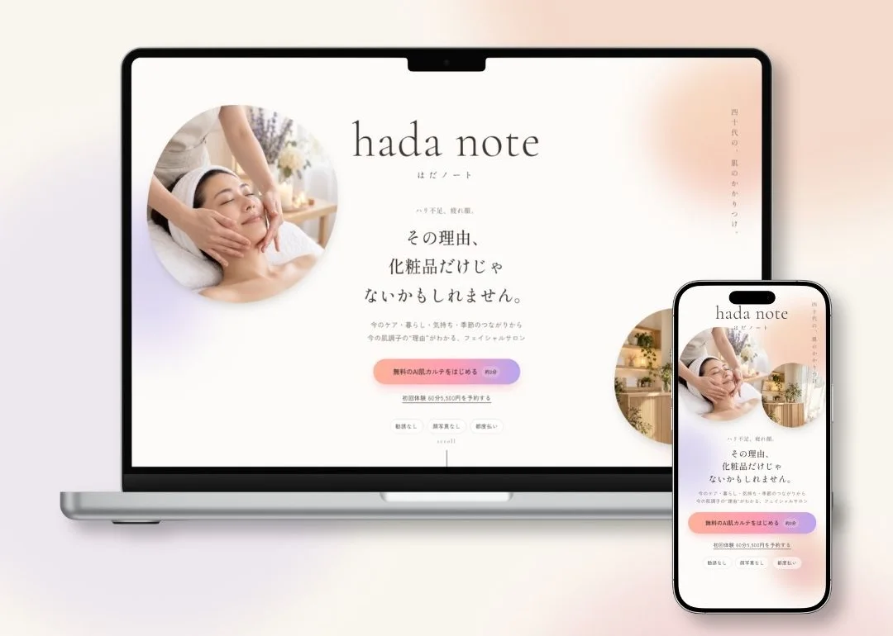
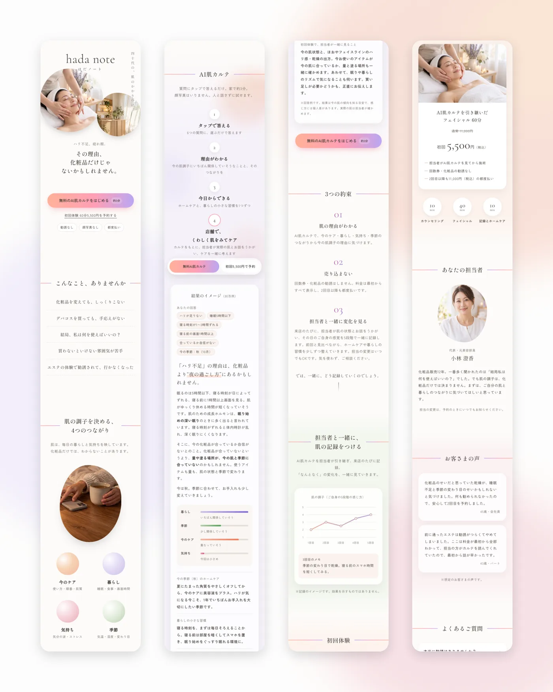

COMMISSIONED WORK / CASE STUDY
hada note
LP / Skin Check

01
OVERVIEW
概要
架空のフェイシャルサロン「hada note（はだノート）」を想定し、商品企画からLP制作までを行いました。LPには、6つの質問にタップで答えるだけで、今の肌の調子の理由がわかる「AI肌カルテ」を組み込み、初回体験の予約へつなげます。
02
TARGET
ターゲット
ハリ不足や疲れ顔が気になる女性を想定しました。化粧品を変えても手応えがなく、エステの勧誘が苦手で足が遠のいている人です。そこで「勧誘なし」「顔写真なし」「都度払い」を最初に示し、まず無料のカルテで気軽に試してもらう流れにしました。
03
DESIGN POINT
工夫したポイント
LP
- 売り込まない姿勢を、最初に見せるファーストビューに「勧誘なし・顔写真なし・都度払い」を置き、料金もすべて事前に表示しました。
- 肌の調子を「4つのつながり」で説明今のケア・暮らし・気持ち・季節の4つから理由を示し、化粧品だけに頼らない考え方を伝えています。
- 言い切らない表現ルール回答例や記録例には「目安です」「効果を示すものではありません」と注記し、お客さまの声は「想定」と明記しました。
AI肌カルテ
- 3分・顔写真なしで、予約の前に1歩LP内で開くチャット形式にし、6つの質問にタップで答えるだけで結果が出るようにしました。
- 回答を点数化して、一番関係していそうな理由を返す「暮らし・季節・今のケア・気持ち」の4つに点数をつけて結果を決め、日付から季節も自動で判定しています。
- 結果から、そのまま予約と引き継ぎへ結果の最後にカルテ番号を表示し、LINEでの初回体験予約と、担当者への引き継ぎにつなげました。
04
SCREENS
画面イメージ

05
MOVIE
LP用に生成した動画
サロンの空間と施術の様子を、AIで画像から動画まで生成しました。